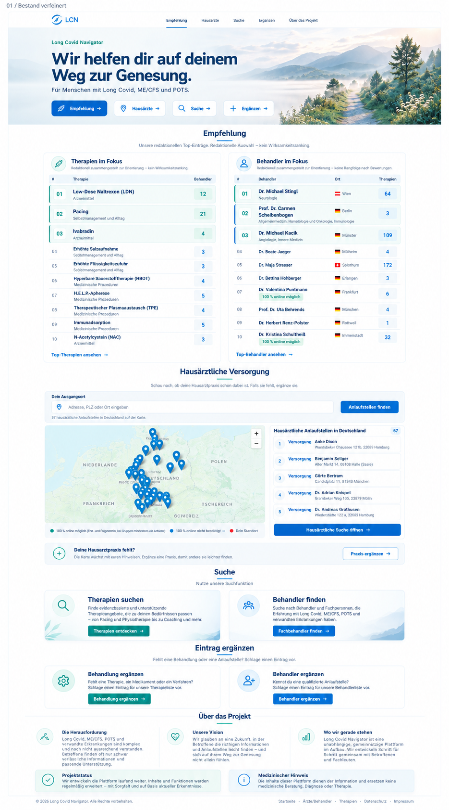
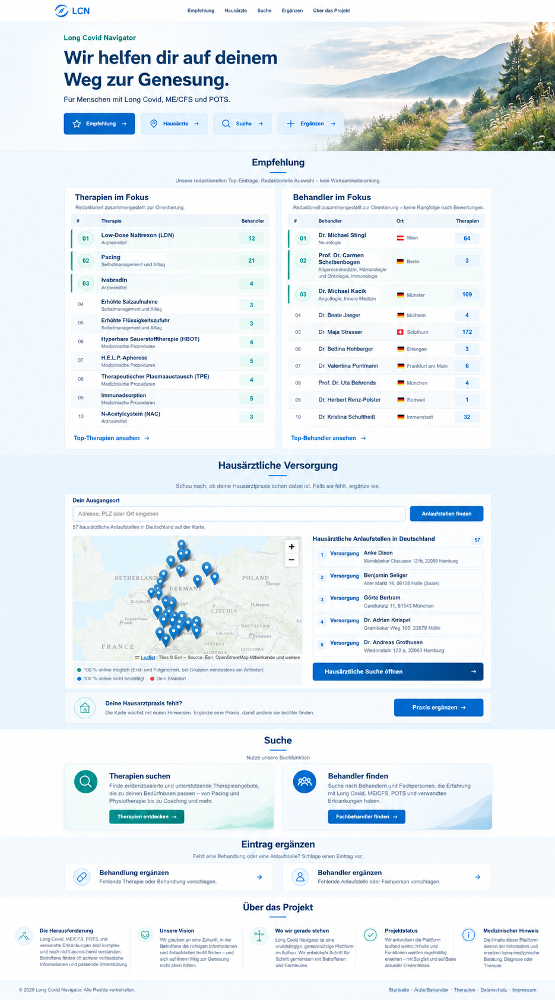
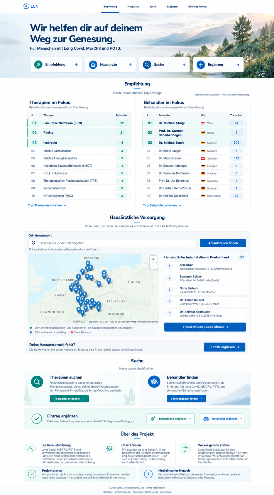
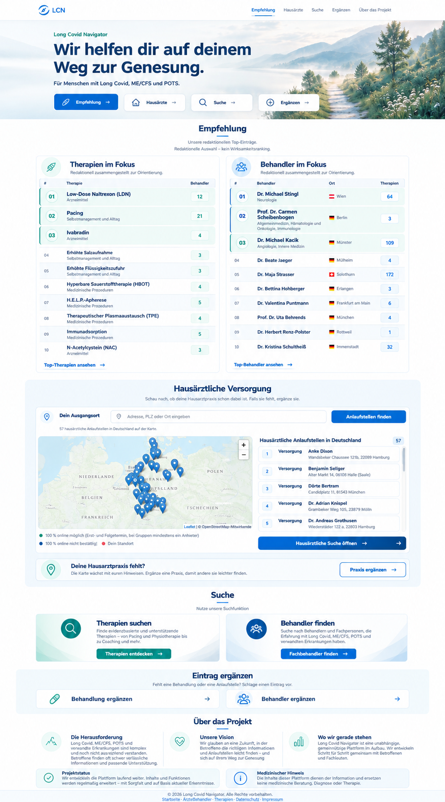
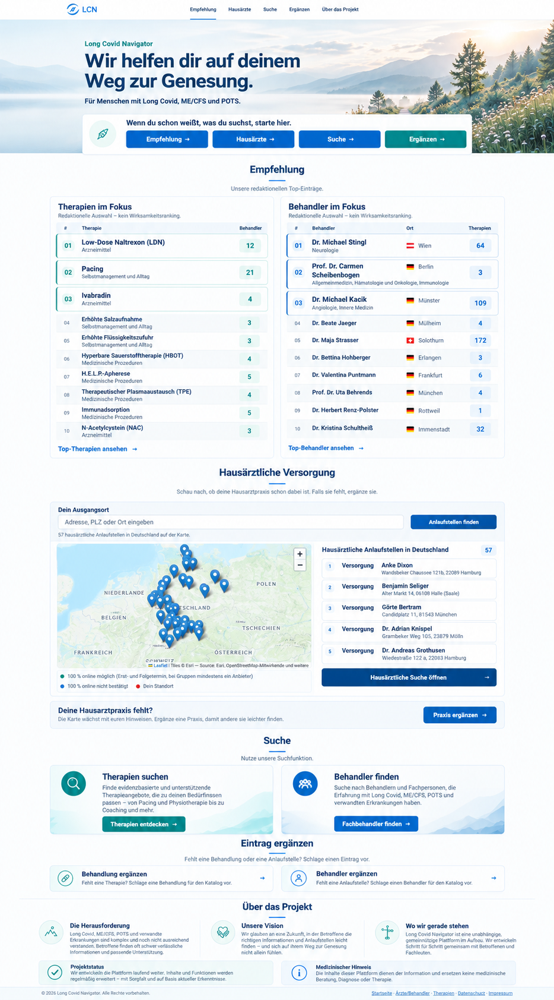

LONG COVID NAVIGATOR · ZWEITE DESIGNRUNDEEure Werkzeuge. Fünf neue Gestaltungen.
Die konkreten Therapie- und Behandlerlisten, die Hausarztsuche mit Karte und Ergebnisliste, die allgemeinen Sucheinstiege und die Projektinformationen bleiben erhalten. Dazu kommt eine eigene Zeile für „Behandlung ergänzen“ und „Behandler ergänzen“.
Die redaktionelle Auswahl zeigt Katalogeinträge mit Verknüpfungszahlen. Keine Artikel, keine neue globale Suche. Die Abbildungen sind grafische Entwürfe; bei einer Umsetzung bleiben die vorhandenen Datenquellen und Funktionen maßgeblich.
Bild anklicken, um die volle Auflösung zu öffnen.
01 · Bestand verfeinert
Die heutige Reihenfolge bleibt erhalten. Feinere Rahmen, ruhigere Schaltflächen und weniger optisches Gewicht verfeinern die bestehende Seite.

02 · Klare Kapitel
Helle Flächen gliedern die Werkzeuge. Die konkrete Auswahl bleibt als Tabelle sichtbar; das Hausarztwerkzeug erhält einen eigenen blauen Abschnitt.

03 · Kompakte Tabellen
Die konkreten Empfehlungen stehen in kompakten Tabellen. Eine schmale Ergänzungsleiste fasst beide Vorschlagswege zusammen.

04 · Weiche Flächen
Sanfte Blau- und Türkisflächen geben der Seite mehr Wärme. Die vorhandenen Listen, Sucheinstiege und die Karte bilden weiter den Inhalt.

05 · Kompakt & klar
Weniger große Kästen und Abstände, dafür klare Tabellen und Überschriften. Alle Werkzeuge bleiben auf der Startseite erkennbar.

Aufbau und Begründung · ImageGen-Prompts · 24. Oktober 2026